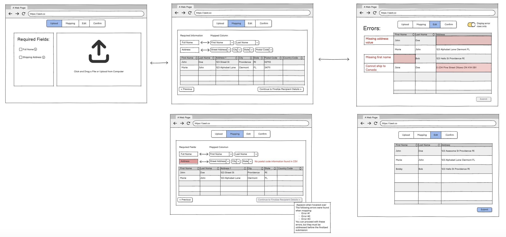

Designing With a Team
All design is
iterative
. My experience with game design and web development has shown me that the key to success is
openness to change
and seeking
diverse perspectives.
In this case study, I worked with Mai-Anh Nguyen, Jason Uranta, and Kaluki Kithome to design an interface for large-scale uploads of recipient information for a corporate gifting platform. From developing initial concepts within our group to showcasing our final mockup feature, we leveraged our diverse perspectives and multiple opportunities for feedback and revision to create a more robust and polished feature. Here was our process.
In this case study, I worked with Mai-Anh Nguyen, Jason Uranta, and Kaluki Kithome to design an interface for large-scale uploads of recipient information for a corporate gifting platform. From developing initial concepts within our group to showcasing our final mockup feature, we leveraged our diverse perspectives and multiple opportunities for feedback and revision to create a more robust and polished feature. Here was our process.

The Problem Statement
The first step of any design process is identifying the problem(s) one hopes to solve. In our case, we communicated with the gifting platform's lead UI Designer to establish a solid foundation for our work. The problem was that the platform's current interface for CSV uploading was too restrictive, frustrating customers and limiting businesses' ability to customize their interface. We were tasked with creating an interface that could accommodate a diverse set of inputs while streamlining the whole process for the customer.
Step 1: Initial Concepting
Once we had a clear idea of the problem we were trying to solve, each member of our team sketched out a series of screens representing four unique implementations of the feature. None of us communicated during this process, and we didn’t look at Zest’s current interface. The purpose of this step was to generate fresh ideas. Here were my sketches:


My sketches lay out a possible user interaction. First, the user may choose to upload a CSV or add recipients manually.
After uploading a CSV, they see the field mappings and can fix any errors that appear.
Finally they see a finalized recipients list after submitting.
Key features:
1. Presents the user with alternatives to CSV upload
2. Option to download CSV template
3. Original CSV rendered in-window
4. Visualization of mapping from user-supplied columns to required fields (First & Last → Full Name)
5. Errors displayed on the side; counter for number of errors remaining
6. User must fix all errors before continuing
My goal with my sketched feature was to balance the flexibility our corporate gifting platform wanted and the simplicity needed to make it accessible. I wanted to give users the ability to customize their interaction with the interface without overwhelming them with too many options. Features like the visualized field mappings and alternative upload options give users additional flexibility. Features like strict error checking and the error counter prevent mistakes and give users confidence in themselves and the system.
2. Option to download CSV template
3. Original CSV rendered in-window
4. Visualization of mapping from user-supplied columns to required fields (First & Last → Full Name)
5. Errors displayed on the side; counter for number of errors remaining
6. User must fix all errors before continuing
My goal with my sketched feature was to balance the flexibility our corporate gifting platform wanted and the simplicity needed to make it accessible. I wanted to give users the ability to customize their interaction with the interface without overwhelming them with too many options. Features like the visualized field mappings and alternative upload options give users additional flexibility. Features like strict error checking and the error counter prevent mistakes and give users confidence in themselves and the system.
Step 2: Combining Our Concepts
Once all four of us had come up with unique implementations of the feature, we combined them into a single wireframe. We built our prototype using the best ideas from each of our sketches. Using four independently-created concepts allowed us to identify which features we had converged on, while also prompting us to investigate areas where our implementations differed. The result (shown below) was a much more robust first draft than any one of us could have created alone.

In our finalized wireframe prototype, made using Balsamiq, the feature is broken up into three main screens. The first displays information about required fields and prompts the user to upload their CSV in the upload field. Once uploaded, the CSV is rendered in-window along with a visual representation of the field mappings and warnings about any major (column-wide) errors detected. This allows major errors to be fixed, and incorrect field mappings to be corrected, before moving on to finer-grained error handling. The final screen allows users to fix cell-specific errors before submitting their finalized list.
The wireframe combines features from all four of our initial concepts. Here are the features we kept from my sketches:
1. CSV fully rendered in-window so user can see field mappings on their original import
2. Error messages displayed to the side of each row
3. Cells in rendered CSV are editable
4. Error counter
The wireframe combines features from all four of our initial concepts. Here are the features we kept from my sketches:
1. CSV fully rendered in-window so user can see field mappings on their original import
2. Error messages displayed to the side of each row
3. Cells in rendered CSV are editable
4. Error counter
Step 3: Getting Feedback
After completing our wireframe, we received feedback on it from a Teaching Assistant for our class. Below are some of the main points of feedback we received.
1. Page titles (in concert with progress bar) could help clarify the purpose of each page
2. Adding a “reupload” button to the rendered-CSV page would eliminate redundant clicks
3. Moving error messages to a popup in each cell would make the UI more informative and help formatting with multiple errors on one row
4. Add back button to error-editing page for consistency
5. Progress bar looked a too interactive/button like
6. Add clarification to each item in the “required fields” list for more specificity
Having a novice user look over our prototype webpage was invaluable for discovering where our feature was unclear or lacking functionality. It gave us a clear direction for the next phase of our work: creating a more polished mockup of our feature.
1. Page titles (in concert with progress bar) could help clarify the purpose of each page
2. Adding a “reupload” button to the rendered-CSV page would eliminate redundant clicks
3. Moving error messages to a popup in each cell would make the UI more informative and help formatting with multiple errors on one row
4. Add back button to error-editing page for consistency
5. Progress bar looked a too interactive/button like
6. Add clarification to each item in the “required fields” list for more specificity
Having a novice user look over our prototype webpage was invaluable for discovering where our feature was unclear or lacking functionality. It gave us a clear direction for the next phase of our work: creating a more polished mockup of our feature.
Step 4: High-Fi Prototype
We developed our final prototype using Figma, which allowed us to model the interactions we expected users to perform. The combination of feedback and enhanced modeling enabled us to anticipate the pros and cons of each choice more accurately. Our final prototype closely resembles our original wireframe, incorporating several minor changes that enhance its functionality, usability, and accessibility.
Here are key changes we made in our polished prototype:
1. Included hoverable information icons next to each item in the “required fields” list (response to feedback #6)
3. Moved error messages so they are local to their cell (response to feedback #3)
4. Made the styling and messages of navigation buttons consistent across each page (response to feedback #4)
5. Made our progress bar look less like a button and more like a timeline (response to feedback #5)
6. Added a confirmation and celebration page to our workflow to improve the responsiveness of our page
1. Included hoverable information icons next to each item in the “required fields” list (response to feedback #6)
3. Moved error messages so they are local to their cell (response to feedback #3)
4. Made the styling and messages of navigation buttons consistent across each page (response to feedback #4)
5. Made our progress bar look less like a button and more like a timeline (response to feedback #5)
6. Added a confirmation and celebration page to our workflow to improve the responsiveness of our page
Final Thoughts
Working within groups is often a fact of being a professional designer. Project partners can bring conflicting ideas and frustrations, but when embraced, they offer a world of opportunity for the sharing and synthesis of ideas. In this case study, our finished product was an equal creation of all four of us, and it benefited immensely from it. I will always seek out other passionate people to work with, no matter the project, because I believe it creates better products.
As this case study showed, working with partners isn’t the only way to leverage diverse perspectives. The feedback we received from an outside observer provided crucial direction for refining our prototype. In general, I believe feedback is one of the most important tools a designer can use. In game design, playtesting often takes up a major portion of development time, as the only way to tell if things are really working is to try them out on players.
I am confident in my skills as a designer, and certain that anything I can come up with will be improved by sharing it with others.
As this case study showed, working with partners isn’t the only way to leverage diverse perspectives. The feedback we received from an outside observer provided crucial direction for refining our prototype. In general, I believe feedback is one of the most important tools a designer can use. In game design, playtesting often takes up a major portion of development time, as the only way to tell if things are really working is to try them out on players.
I am confident in my skills as a designer, and certain that anything I can come up with will be improved by sharing it with others.